N°01 — Garment Collection17 pages
Beneath the Canopy
A mushroom-inspired collection in denim, fully constructed. Below is the full process, from the concept note and boards to draping, the toile and the final garment.
Tap any page to see it full screen
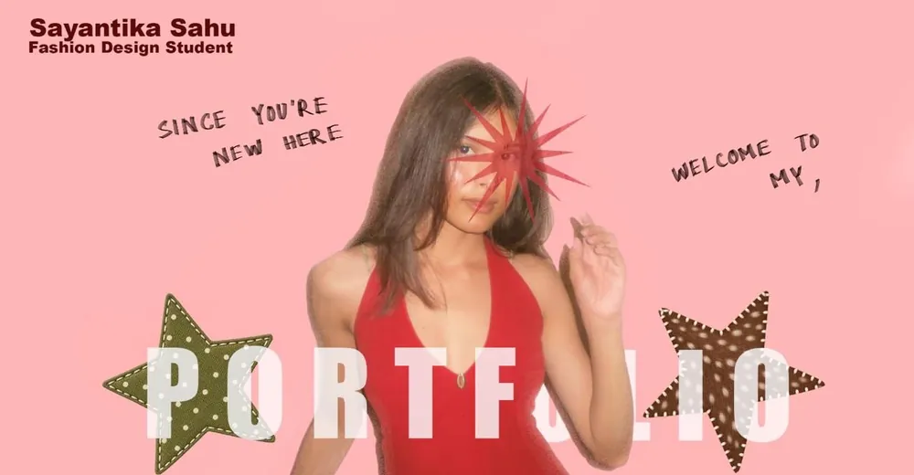
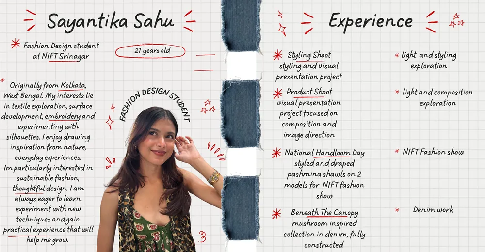
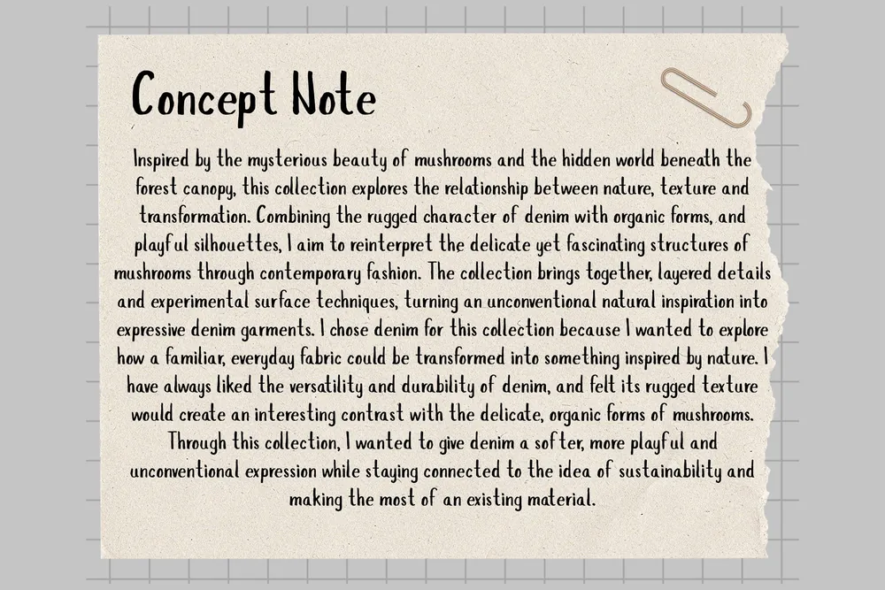
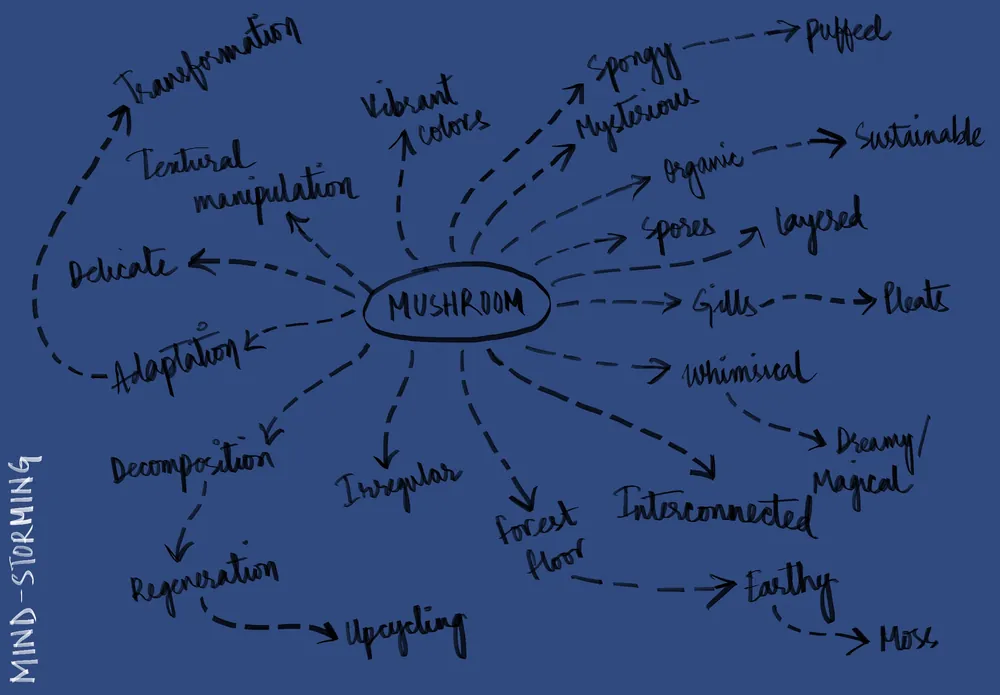
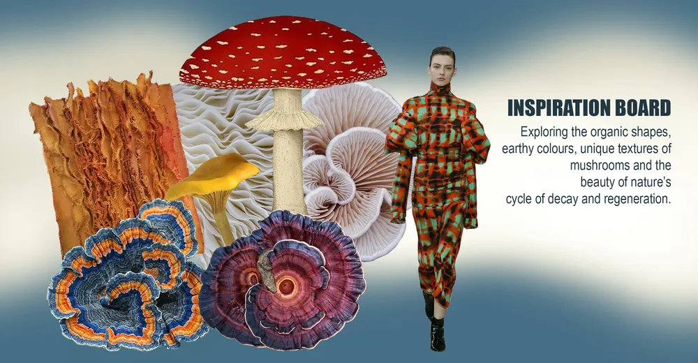
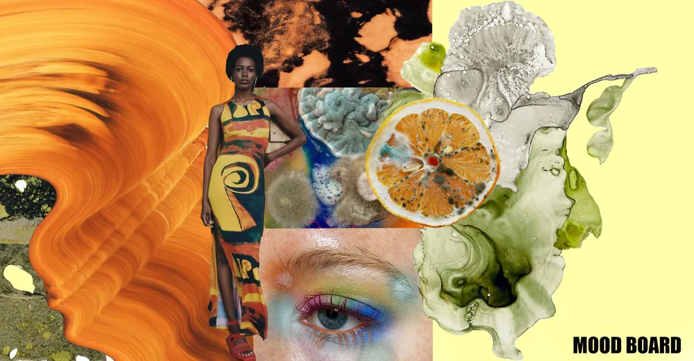
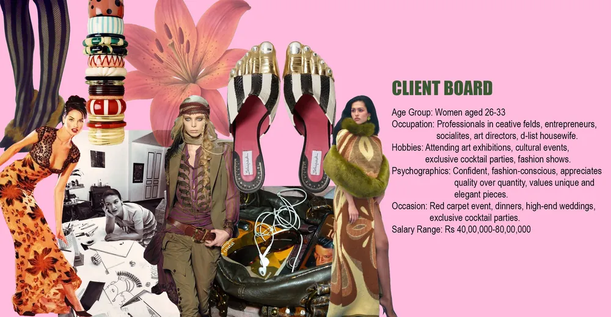
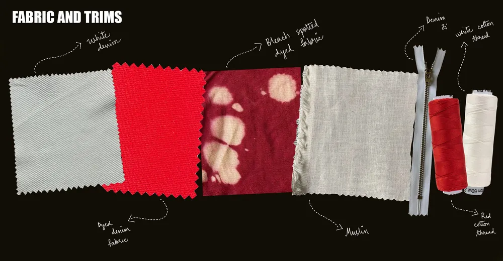
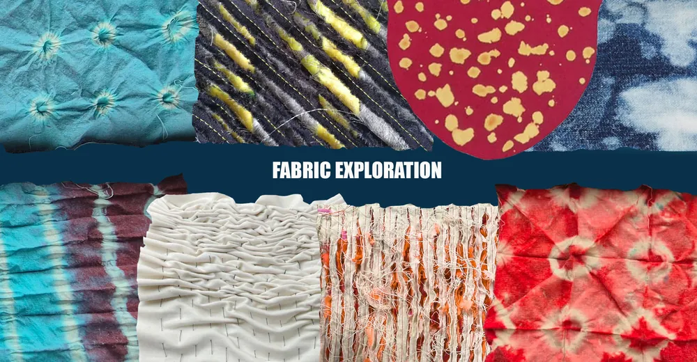
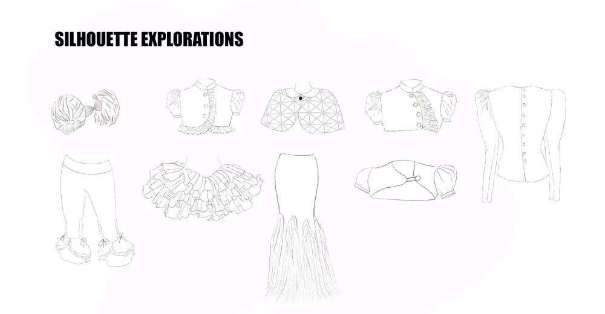
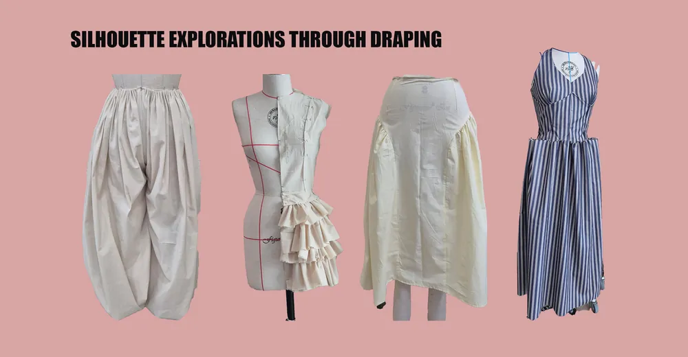
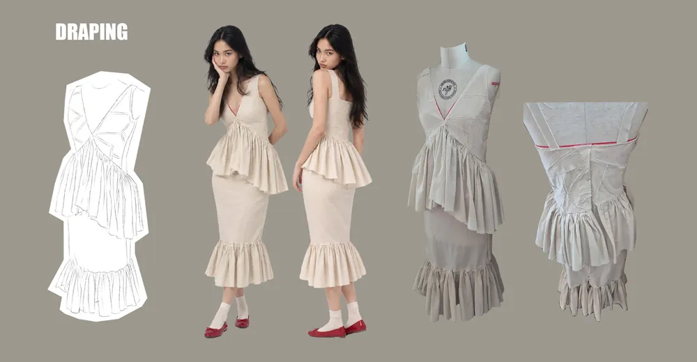
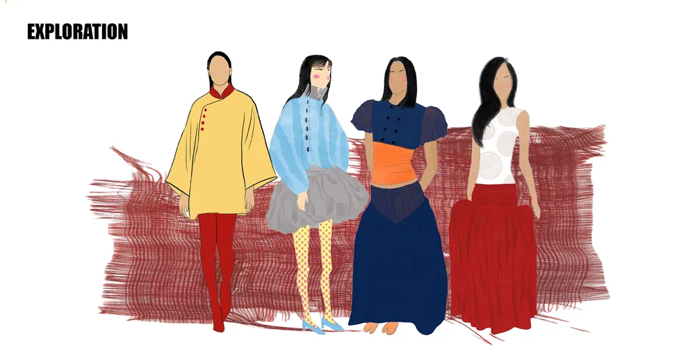
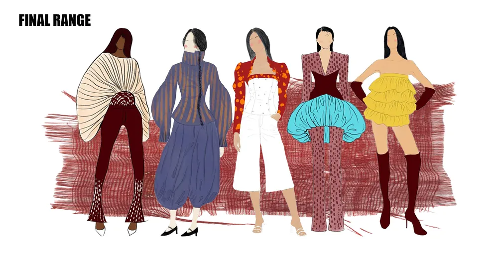
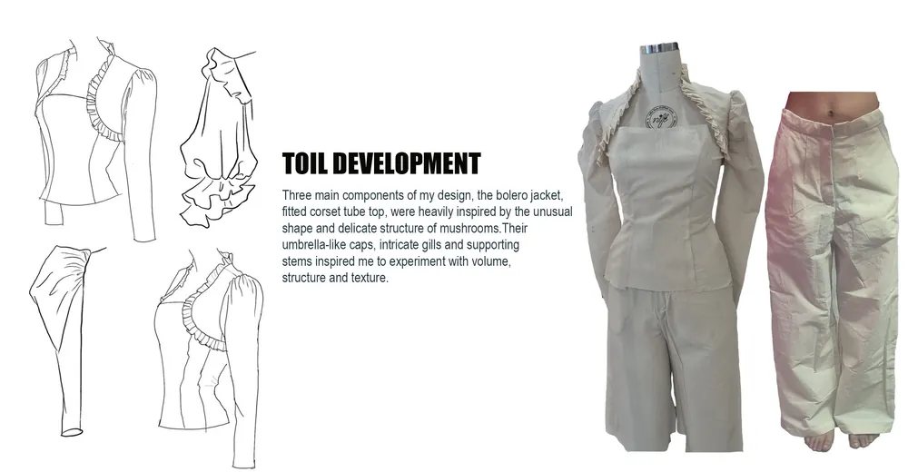
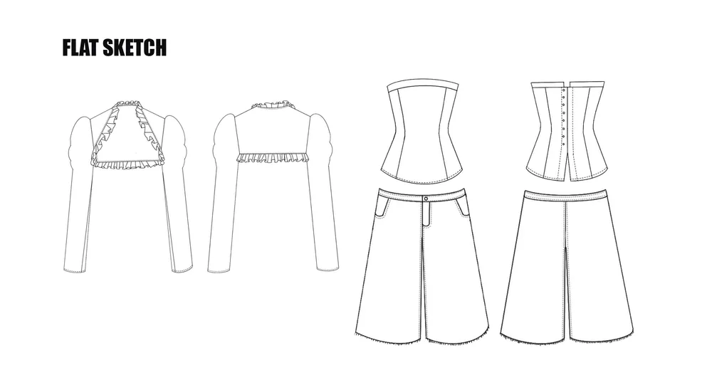
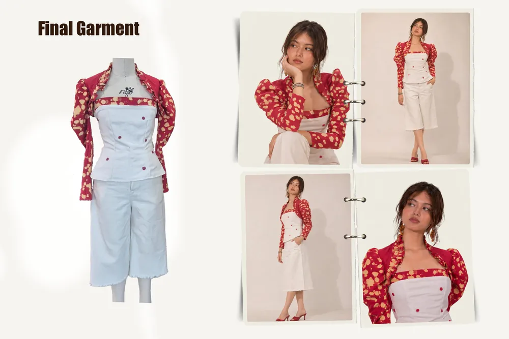